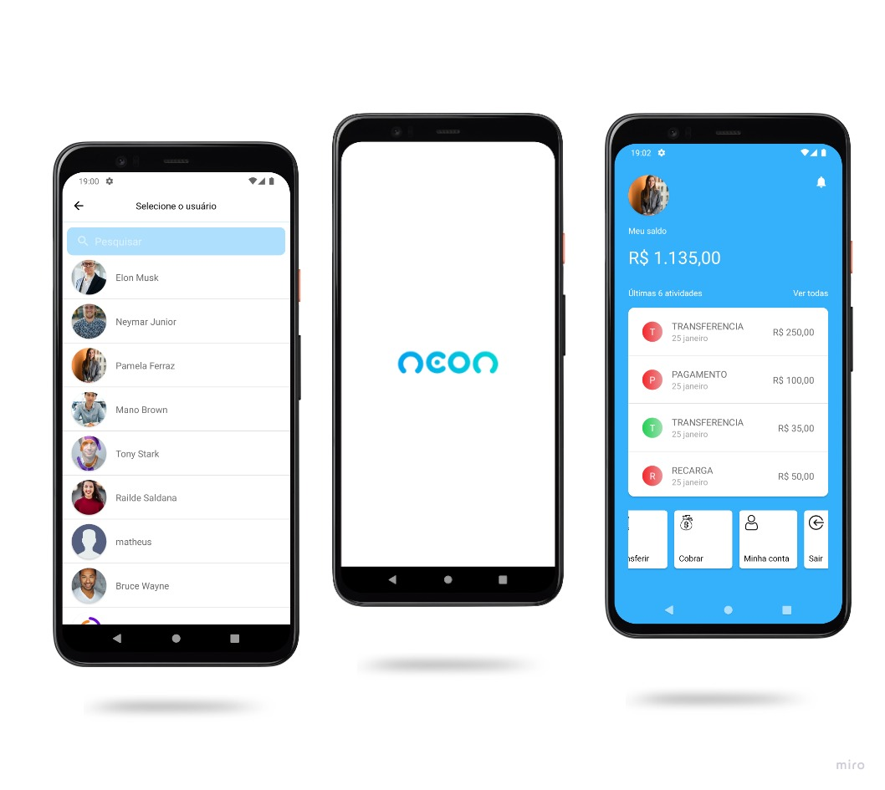
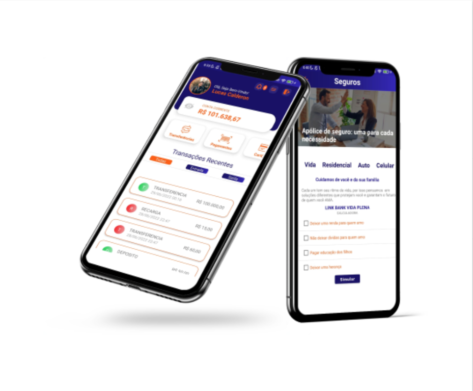
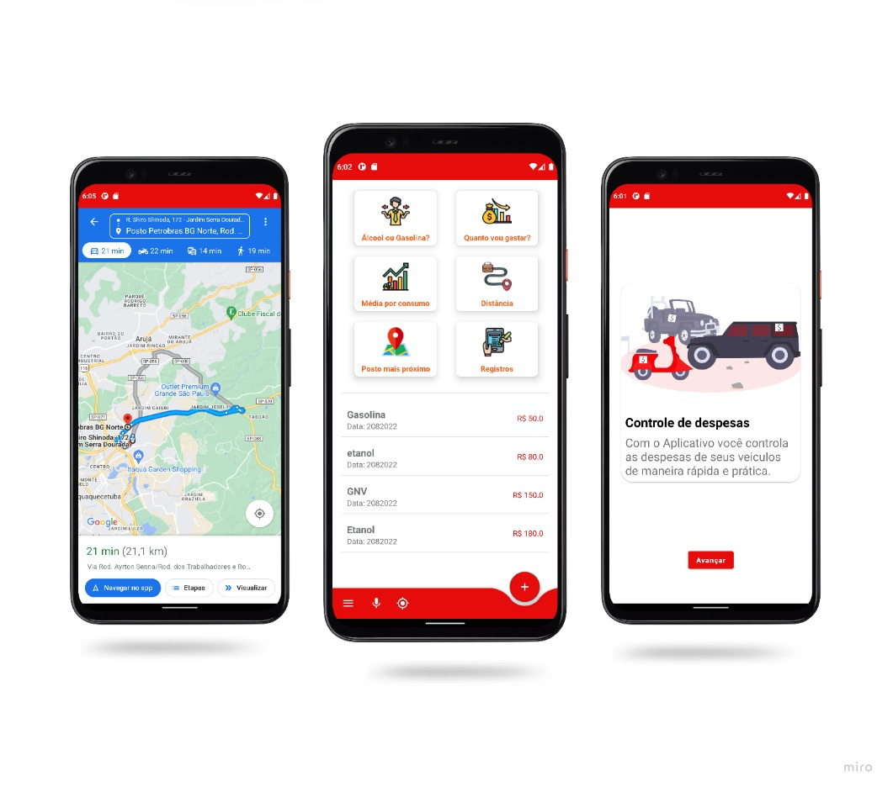
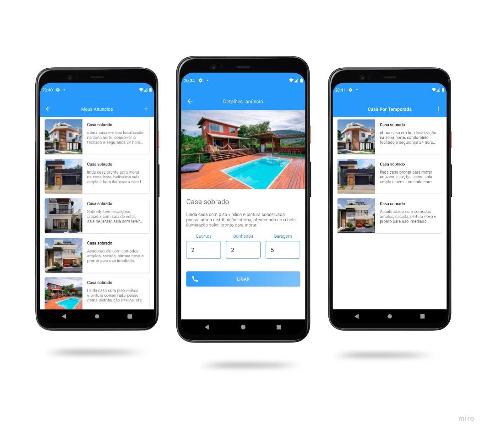
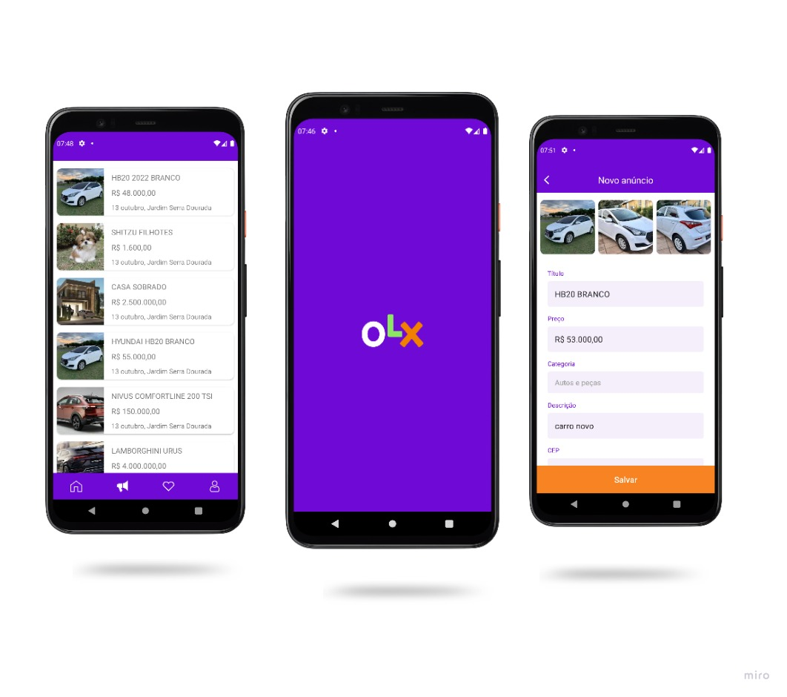
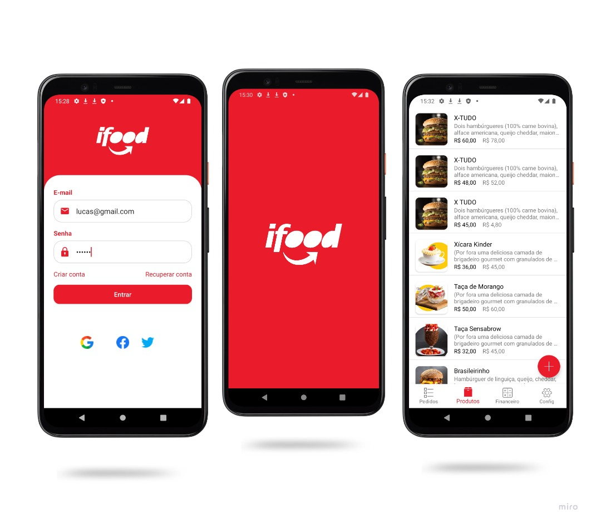

Android nativo
Aplicações Android com Kotlin, Java e Jetpack Compose, da interface à evolução do código já em uso.
Android Software Engineer
Sou Lucas Calderon, desenvolvedor especializado em aplicações Android nativas, arquitetura de software e integrações que conectam tecnologia a problemas reais.
São Paulo, SP · Engenheiro de Software na Phoebus
Objetivo: oportunidades Android pleno e sênior.
data class HomeUi(
val title: String
)
class HomeViewModel : ViewModel() {
val ui = MutableStateFlow(
HomeUi("Início")
)
}Trecho genérico, só para composição visual. Não é código de um aplicativo real.
Sobre
Sou desenvolvedor Android com experiência na construção e evolução de aplicações nativas, trabalhando com Kotlin, Java, arquiteturas modernas e integrações com serviços e dispositivos.
Minha atuação envolve desde o desenvolvimento de interfaces e componentes reutilizáveis até integrações com APIs, meios de pagamento e soluções utilizadas em operações reais.
Busco construir software confiável, escalável e de fácil manutenção, equilibrando qualidade técnica, experiência do usuário e necessidades do negócio.
Aplicações Android com Kotlin, Java e Jetpack Compose, da interface à evolução do código já em uso.
MVVM, Clean Architecture, Hilt e Koin no trabalho descrito na Foursys, com atenção a código que outra pessoa consiga manter.
Smart POS na Opdv e, na Foursys, os módulos de Investimentos, Poupança e Comprovantes nos aplicativos do Bradesco e do Next.
A experiência de produto está na Opdv e na Foursys. Os repositórios públicos desta página são estudos e clones, separados desse trabalho.
Experiência
Cargos, empresas e períodos como já estavam publicados. A atuação em Android começa na Foursys; PCP e CNC ficam registrados como são, sem serem reescritos como engenharia de software.
mar 2026 — atual
Phoebus · João Pessoa, PB
O detalhe técnico das atividades neste cargo ainda não foi confirmado para este portfólio.
fev 2023 — mar 2026
Opdv · Porto Alegre, RS
Desenvolvimento de aplicações Android para Smart POS, no contexto de pagamentos, com Kotlin, Jetpack Compose, Hilt, Retrofit e Firebase.
abr 2022 — ago 2023
Foursys · Barueri, SP
Desenvolvimento Android nos módulos de Investimentos, Poupança e Comprovantes dos aplicativos Bradesco e Next. A descrição já publicada inclui Kotlin, Java, MVVM, Clean Architecture, Coroutines, Jetpack (Navigation, DataBinding e Lifecycle), Hilt, Koin, APIs REST e Firebase, além de modularização, padronização de design system, SCRUM e revisão de código.
fev 2020 — out 2021
Aerem Brasil · São Paulo, SP
Coordenação de PCP, com programas em AutoCAD e Metallix, acompanhamento de puncionadeira CNC e apoio ao planejamento da produção. Não é um cargo de desenvolvimento Android.
jun 2015 — fev 2020
Maxtil Indústria e Comércio · Guarulhos, SP
Programas e desenhos para puncionadeira CNC, com AutoCAD, Campath, Metallix e ERP.
Formação
2019 — 2023
2021 — 2022
2017 — 2021 · trancado
Curso informado como trancado. Não faz parte da atuação em Android.
Especialidades
Agrupado por tema, sem nível e sem porcentagem. Entram tecnologias citadas na experiência ou nos projetos desta página. Itens sem esse lastro ficaram de fora.
Android Development
Architecture
Networking & Data
Payments & Devices
Quality & Tooling
Projetos
Nenhum card abaixo é um produto em produção. O trabalho em aplicativos de empresa está na experiência: Smart POS na Opdv e módulos do Bradesco e do Next na Foursys. Estes repositórios são exercícios de portfólio. Os valores que aparecem nas imagens são fictícios.

Clone · estudo
Clone de estudo da interface do aplicativo Neon. As telas mostram seleção de usuário, saldo e atividades. Não é o produto da Neon.

Estudo
Estudo de interface de um aplicativo financeiro, com telas de conta, transferências, pagamentos, recarga e seguros. Não é um banco em operação.

Estudo
Estudo para controle de despesas com combustível. As telas reúnem comparação entre combustíveis, média de consumo, registros e um mapa com rota.

Estudo
Estudo de anúncios de imóveis, com lista, detalhe do anúncio e uma ação de contato. A descrição já publicada também citava cadastro, imagens e recuperação de conta por e-mail.

Clone · estudo
Clone de estudo de classificados. A imagem mostra a listagem e o cadastro de um anúncio. A descrição anterior também citava favoritos, chat e geolocalização. Não é o aplicativo da OLX.

Clone · estudo
Clone de estudo com tela de acesso e listagem de produtos. Não é o iFood e não representa integração com restaurantes reais.
Complemento
Itens que já constavam nesta página. Não há documentos anexados aqui.
2023
TQI
2023
DIO
2022
DIO
2022
Santander Brasil
2022
NTT DATA
2021
Instituto Federal de São Paulo
Recomendações
“O Lucas é um profissional exemplar, sua característica marcante é a comunicação, sendo capaz de simplificar conceitos complexos, relatar bloqueios, fazer boas perguntas e ajudar outras pessoas. Além disso, ele se mantém atualizado com as tendências do mercado e está sempre em busca de escrever códigos que sigam as boas práticas. O Lucas faz uma grande diferença na equipe e isso é rapidamente observado.”
“Após desenvolver um projeto junto ao Lucas eu consegui perceber que ele possuí muito comprometimento com a equipe e o produto, sempre trazendo as melhores práticas do mercado e também sempre orientando os colegas de equipe quando necessário. Além de ser muito bom na parte técnica (especialmente no desenvolvimento Android) o Lucas possuí uma ótima comunicação.”
“O Lucas é um profissional muito dedicado e prestativo, sempre disposto a ajudar e compartilhar os seus conhecimentos. Além de estar sempre se atualizando e buscando aprender cada dia mais, tem grande conhecimento na área em que atua. Trabalha bem em equipe, é bem flexível e organizado. Foi um excelente parceiro nos projetos que trabalhamos juntos!”
Contato
Se a conversa for sobre Android nativo, arquitetura ou uma integração em produto real, estou disponível. O objetivo são oportunidades Android pleno e sênior.
Os telefones e e-mails abaixo já estavam neste portfólio. Não há formulário nesta página.